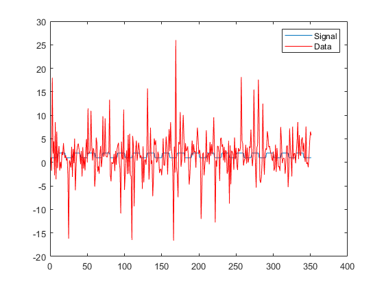
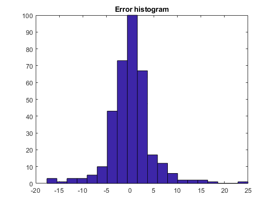
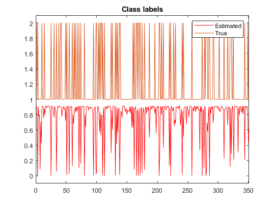
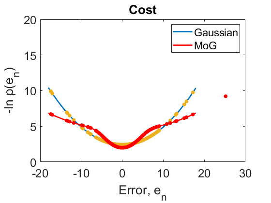

N=351;
x1=spm_boxcars(N,1,10);
x2=ones(N,1);
X=[x1,x2];
beta=[1 1]';
m=2;
mix.m=m;
mix.state(1).prior=0.73;
mix.state(2).prior=0.27;
mix.state(1).m=0;
mix.state(2).m=0;
mix.state(1).C=2.4^2;
mix.state(2).C=8.4^2;
[noise,gamma_true]=spm_samp_mix(mix,N);
new_index=randperm(N);
noise=noise(new_index);
gamma_true=gamma_true(new_index);
y=X*beta + noise;
m=1;
rglm1 = spm_rglm (y,X,m);
m=2;
rglm2 = spm_rglm (y,X,m);
w_ml=pinv(X)*y;
figure
plot(X*beta);
hold on;
plot(y,'r');
legend('Signal','Data');
figure
hist(noise,20);
title('Error histogram');
figure
plot(rglm2.posts.gamma(1,:),'r');
hold
plot(gamma_true);
axis([0 N -0.1 2.1]);
title('Class labels');
legend('Estimated','True');
d_ml=norm(w_ml-beta);
d_vb=norm(rglm2.posts.w_mean-beta);
f=[rglm1.fm,rglm2.fm];
f=f-mean(f);
ef=exp(f);
pm=ef./sum(ef);
w_ma=pm(1)*rglm1.posts.w_mean + pm(2)*rglm2.posts.w_mean;
d_ma=norm(w_ma-beta);
disp(' ');
disp(sprintf('Error for GLM=%1.3f',d_ml));
disp(sprintf('Error for RGLM=%1.3f',d_vb));
disp(' ');
err_ratio=d_ml/d_vb;
disp(sprintf('Ratio MSE_GLM/MSE_RGLM=%1.3f',d_ml/d_vb));
e_ml=y-X*w_ml;
s_ml=std(e_ml);
p_ml=spm_Npdf(e_ml,0,s_ml^2);
E=-log(p_ml);
el=[-4*s_ml:0.1:4*s_ml];
pl=spm_Npdf(el,0,s_ml^2);
El=-log(pl);
p_vb=zeros(N,1);
for s=1:rglm2.m,
p_g=spm_Npdf(e_ml,0,rglm2.posts.variances(s));
p_vb=p_vb+rglm2.posts.pi(s)*p_g;
end
E_vb=-log(p_vb);
p_v=zeros(size(el));
for s=1:rglm2.m,
p_g=spm_Npdf(el,0,rglm2.posts.variances(s));
p_v=p_v+rglm2.posts.pi(s)*p_g;
end
Ev=-log(p_v);
figure
plot(el,El,'LineWidth',2);
hold on
plot(el,Ev,'r','LineWidth',2);
[ee,ei]=sort(e_ml);
plot(e_ml,E,'.','MarkerSize',20);
plot(e_ml,E_vb,'r.','MarkerSize',20);
set(gca,'FontSize',18);
legend('Gaussian','MoG');
xlabel('Error, e_n');
ylabel('-ln p(e_n)');
title('Cost');
z1=rglm1.posts.w_mean(1)/sqrt(rglm1.posts.w_cov(1,1));
z2=rglm2.posts.w_mean(1)/sqrt(rglm2.posts.w_cov(1,1));
disp(sprintf('Z value for GLM = %1.2f',z1));
disp(sprintf('Z value for RGLM = %1.2f',z2));
Current plot held
Error for GLM=0.713
Error for RGLM=0.512
Ratio MSE_GLM/MSE_RGLM=1.391
Z value for GLM = 3.50
Z value for RGLM = 4.97
   